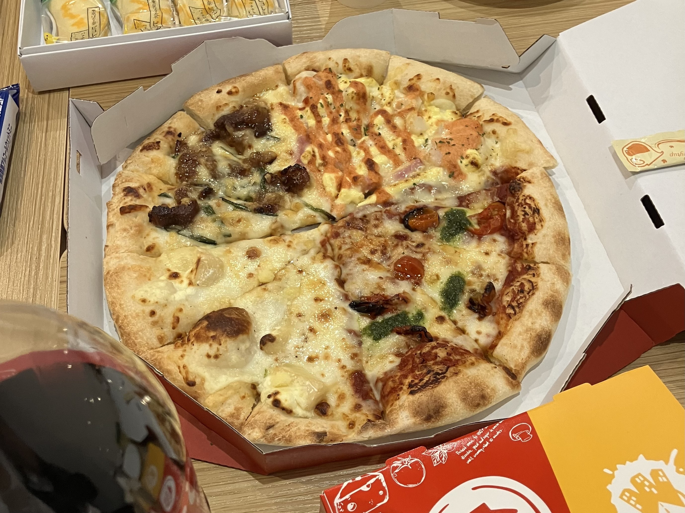
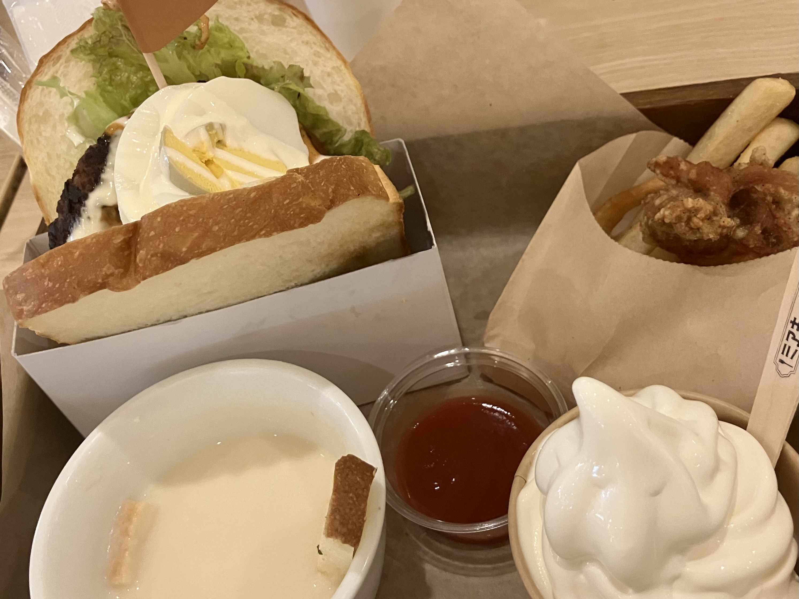
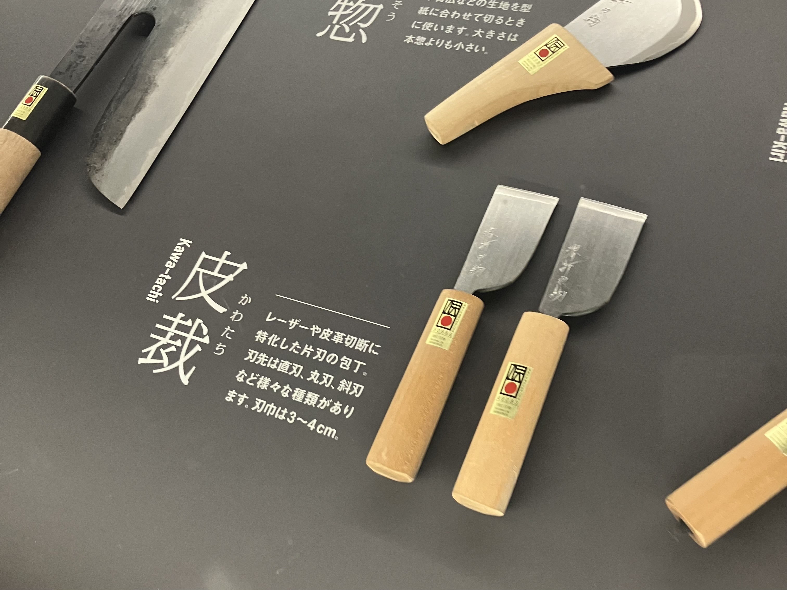
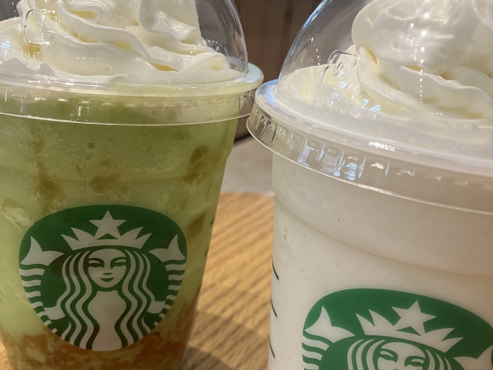
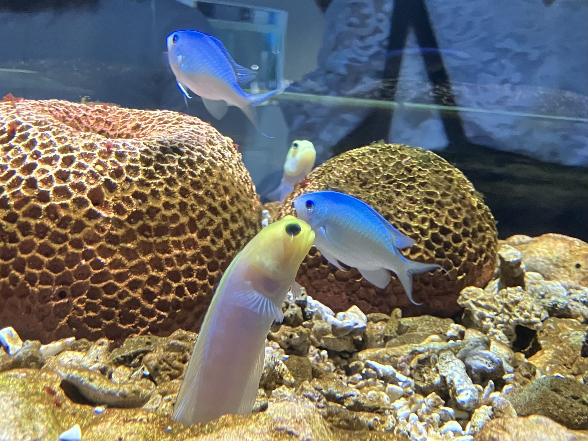
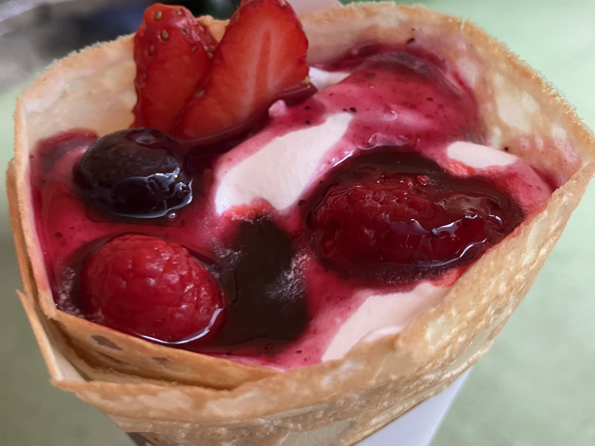

友達とコメダで喋ってからTR!
2024/06/15 ＃抹茶スイーツ ＃友達 ＃学び

コメダ珈琲で、期間限定の抹茶シロノワールが出ると聞いて、最近会えてなかった友...
READ MORE2024/06/15 ＃抹茶スイーツ ＃友達 ＃学び
コメダ珈琲で、期間限定の抹茶シロノワールが出ると聞いて、最近会えてなかった友...
READ MORE2024/06/03 ＃食べ物 ＃友達 ＃学び
忙しくも充実した1日でした。友達の第一志望の大学を見学して、TRの活動の一環でキ...
READ MORE2024/06/02 ＃食べ物 ＃勉強 ＃友達
昨夜まで大阪市内の会場まで1人で行こうと思っていたら、仲の良い同級生も受けるこ...
READ MORE2024/06/01 ＃食べ物 ＃友達

明日が英検だから勉強したかったけど、やる気がでなくてそのままTRの教室に向かい...
READ MORE2024/05/15 ＃案内 ＃教養
以前からお世話になっている方が、熊本から堺にいらっしゃたので、案内をしました...
READ MORE2024/05/06 ＃スイーツ ＃友達 ＃映画
小学校から仲のいい同級生と、話題のデデデデを見に行きました。おやすみプンプン...
READ MORE2024/05/03 ＃小旅行 ＃記念日
両親の結婚記念日のお祝いに、式を挙げた神戸に家族５人と行くことになりました。...
READ MORE2024/04/29 ＃スイーツ ＃日常 ＃勉強
来月から通うことになった塾に、もろもろの書類を持って行ってから、帰りに寄り道...
READ MORE